Puedes entrar en este santuario desde que llegas a la región de la torre del bosque, el cual se encuentra al sureste de dicha torre, al norte del lago Nish.
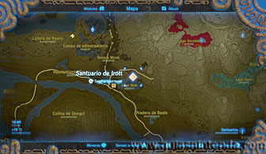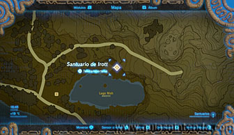
El objetivo es paralizar ciertos objetos para lograr enviarlos de un golpe a un objetivo concreto. El problema es que si das más o menos golpes de los necesarios no lograrás tu objetivo. Lo primero que debes hacer es dejarte caer por el pasillo por donde sube y baja una plataforma (o espera a que suba para bajar en ella).
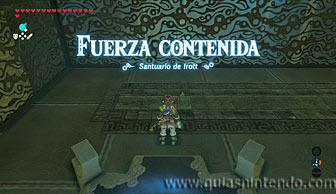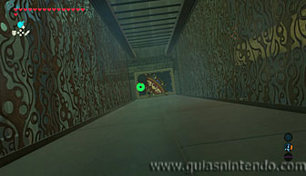
Una vez abajo, abre el cofre para coger un martillo y ponte delante de la esfera. Debes alinearte con la estructura que se ve al fondo (si no la esfera se desviará). Después paraliza la esfera y golpéala con el martillo 5 veces exactas. Si la golpeas menos, no llegará y si lo haces más, se pasará de largo.
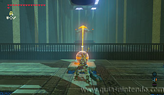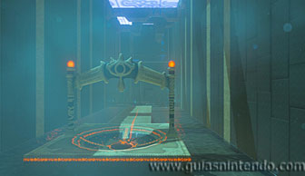
Ahora verás que han aparecido dos escaleras con un bloque en medio a tu izquierda. Paraliza el bloque y golpéalo (al menos con dos golpes, aquí no es necesario tanta precisión). Si lo haces bien crearás una plataforma para poder pasar. Verás la entrada al santuario, pero si quieres coger un cofre más, debes girar a tu izquierda y entrar por el pasillo que hay.
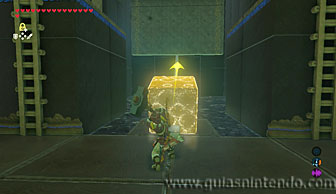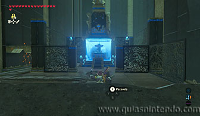
Siguiendo ese pasillo llegarás a una sala muy parecida a la anterior, solo que ahora es algo más complicado. Para empezar puedes abrir un cofre con otro martillo, pero no lo necesitarás (además, tienes uno de antes). Tendrás que alinearte con la estructura y golpear 11 veces con cualquier arma de una mano (terminará por romperse con tanto golpe, puedes grabar la partida si quieres antes de usarla por si necesitas repetir el lanzamiento).
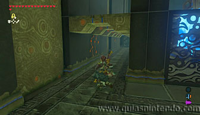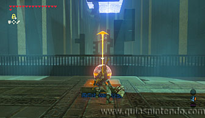
Así lograrás la fuerza exacta que necesitas para que la esfera caiga en el agujero y active el mecanismo. Cuando lo logres se levantarán los barrotes que te impedían llegar al cofre. En su interior puedes conseguir un gran núcleo ancestral.
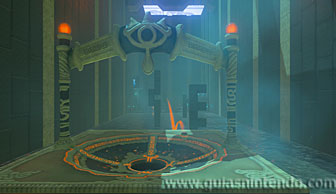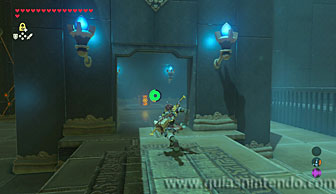
Ahora podrás volver a la sala anterior, subiendo por la plataforma que sube y baja. Cuando llegues al altar del santuario examínalo para obtener un símbolo de valía.
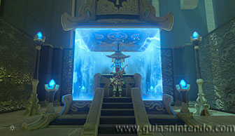